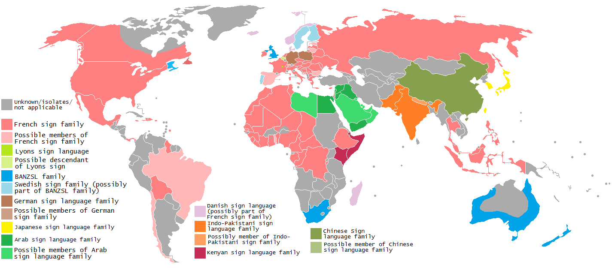

As of 2024, approximately 20% of the global population, or more than 1.5 billion people, live with some form of hearing loss. This includes about 430 million individuals with disabling hearing loss. The impact of hearing loss on individuals and society is profound, affecting communication, education, employment, and mental health. Sign languages (also known as signed languages) are languages that use the visual-manual modality to convey meaning, instead of spoken words. Sign languages are expressed through manual articulation in combination with non-manual markers.

Just like the languages we speak daily, there are different kinds of sign languages around the world. There are over 300 kinds of sign languages globally, but people who do not have hearing loss often assume that there is only one kind of sign language. There is a map on the side created 11 years ago depicting the principal sign language families of the world. This website is created to raise awareness about the challenges faced by people with hearing loss and to organize some of the most used sign languages around the world.